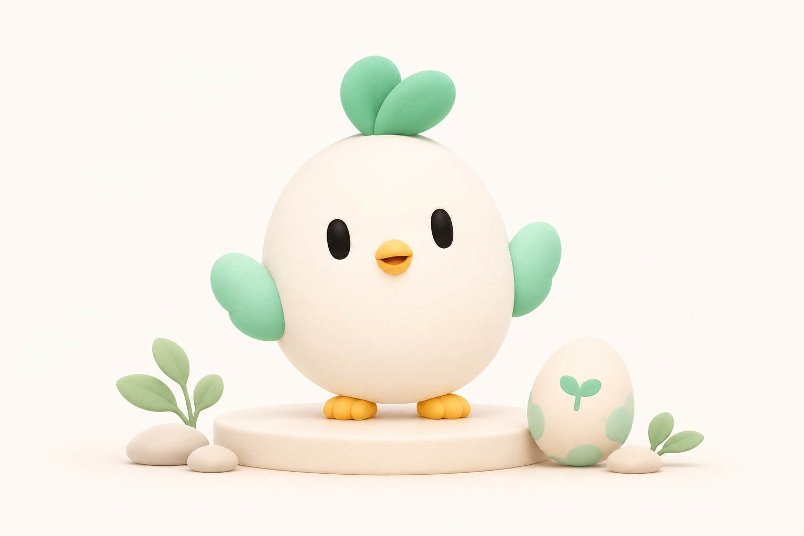
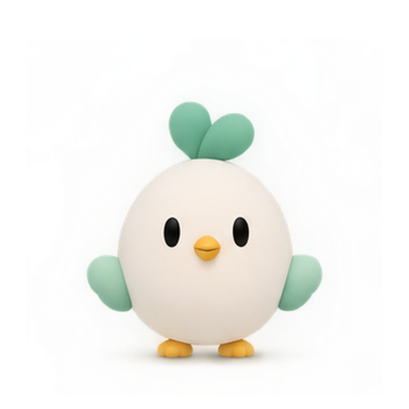
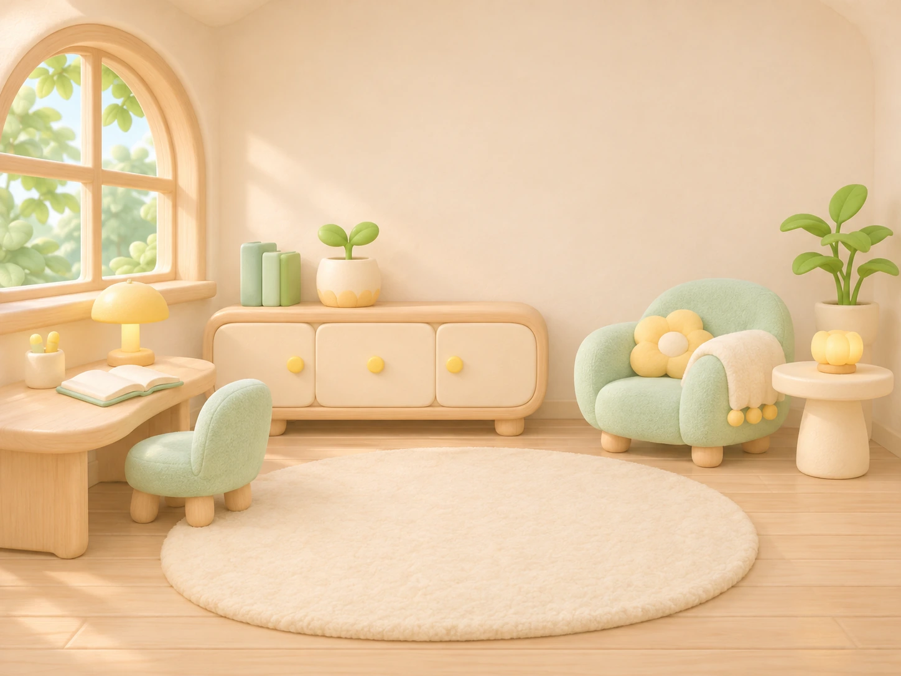

文字層級
每一點努力，都值得被記得。
清楚的區塊標題
16px 正文：記下真實經歷，最後由你確認。
14px 說明：可以修改、採納或排除。
12px 圖說：固定示例，尚未正式保存。讓每一步，都有溫柔的回應
清楚的操作介面，柔和立體的 Lumi。
讓成長被看見，也讓重要的人被記得。
本機設計候選・所有人物與回饋均為示例，沒有產品資料寫入。
01 / FOUNDATIONS
暖白是畫布，薄荷綠是陪伴；深綠負責操作，暖黃留下驚喜。
每一點努力，都值得被記得。
16px 正文：記下真實經歷，最後由你確認。
14px 說明：可以修改、採納或排除。
12px 圖說：固定示例，尚未正式保存。按鈕 16px／卡片 20px／面板 24px 圓角。
24px 基準、2px 圓端筆畫；操作區至少 44px。
02 / COMPONENTS
從日常操作到失敗重試，每個狀態都保留下一步。
這裡只展示元件狀態，不會保存產品資料。
03 / LUMI & THE EGG
角色、蛋與姿勢使用共同透明畫布。新素材待 Owner 視覺驗收，原稿完整保留。
素材來源為生成圖集；1024px 與部分 512px 是衍生放大檔，非原生 2048px 母檔。可編輯分層母檔及美術驗收仍待補齊。


04 / INTERACTION
這是孵化呈現示例，不建立目標、不呼叫 AI，也不改正式孵化狀態。
聲音預設關閉；兩個開關各自獨立。
正常節奏：細裂 800ms → 深裂 1000ms → 第三擊開殼／閉眼／睜眼，共 2000ms。
05 / A PLACE TO RETURN
暖白的光、薄荷綠的座椅。Lumi 在自己的小房間裡，陪你照自己的步調前進。

房間圖片暫時無法顯示。Lumi 與下方操作仍可使用，可以切換版本重試。
角色腳底與地毯對齊；切換安靜姿勢不改房間、不變成夜景，也不代表缺席的懲罰。
重新製作空間、圓角家具、柔和日光與中央留白。家具包含於場景圖，Lumi 是獨立圖層；可編輯家具分層仍待補齊。
新版房間為生成美術候選，等待目視採用。舊版背景完整保留；這裡不更動世界、家具或積分資料。
06 / SOUNDS OF SMALL STEPS
重新作曲與合成的 12 項候選：8 個音效、3 首情境音樂、1 個房間環境聲。開啟對應開關，再逐項比較新舊版本。
預設無聲；每次只播放一個同類音軌。新舊試聽為候選比較，不代表正式採用。
全部為本輪原創離線作曲／程式合成，沒有第三方取樣或人聲。WAV 原稿與 AAC 播放版均保留；92 項聲音總需求尚未全數完成，聽感與最終採用待確認。